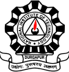

Wearable robotics
Adaptive intelligence for wearable robots
Integrating environmental perception and proprioceptive intent estimation with learning-based control, so wearable robots can adapt across tasks, environments and users.
Robotics Systems Engineer & Researcher
Wearable assistive robotics · Haptics · Human–robot interaction
Robotic systems, designed around people.
About
I build robotic systems that connect mechanical design, embedded sensing, learning and control with the person using them. My work spans wearable assistance, personalized haptic interfaces and soft robotic technologies, from fabrication and experimental characterization to onboard inference and human studies.
I am a Research Project Scientist in the Human-Centred Robotics and Cybernetics Group at CSIR–CMERI. Previously, I worked on wearable robotic systems at IIT Delhi and CSIR–CMERI, and on pneumatic tactile feedback at the BioRobotics Institute, Scuola Superiore Sant’Anna.
My research is motivated by a practical question: how can robots understand a person and their surroundings, then adapt the way they assist or communicate? I am interested in connecting perception and proprioception with learning-based control and human-in-the-loop personalization.
Wearable mechanisms, tendon and textile transmission, silicone actuators, hyperelastic FEA and custom test rigs.
Jetson, ESP32, Teensy, PCB integration, electro-pneumatics, ROS 2, micro-ROS, Nav2 and Unity.
Temporal models, perception, neural surrogates, impedance and admittance control, Bayesian optimization and CMA-ES.
Synchronized gait measurements, sEMG, motion capture, instrumented treadmills and haptic psychophysics.
Integrating environmental perception and proprioceptive intent estimation with learning-based control, so wearable robots can adapt across tasks, environments and users.

Combining tactile and kinesthetic feedback to communicate task information and support human–robot interaction and shared autonomy.
Research
11 research projects
Wearable robotics
A hip exoskeleton as a personalized haptic interface for assisted navigation
A four-actuator hip interface renders gait-timed navigation cues. Constrained human-in-the-loop personalization integrates joint impedance control, wearable gait inference and indoor navigation.

Wearable robotics
A causal visuo-inertial pipeline for terrain, locomotion, gait phase, and speed
Anticipatory camera perception and inertial experts form a causal inference pipeline. Probabilistic locomotion context conditions shared models for continuous bilateral gait phase and walking-speed estimation.

Research platforms
A modular ROS 2 architecture for deployment and human-in-the-loop experimentation
Declarative hardware descriptions, modular ROS 2 processing and a shared assistance-profile interface support deployment and human-in-the-loop optimization across knee and hip exosuits.

Wearable robotics
Sensorized pneumatic muscles and rapid personalization for bilateral knee-flexion assistance
An untethered knee-flexion exosuit combines textile force routing, sensorized pneumatic muscles and onboard force estimation. A force-based HIL objective personalizes assistance rapidly.
Haptics
Proprioceptive sensing with tactile and kinesthetic feedback for VR and telerobotics
Custom bend sensing, pneumatic fingertip arrays and motor–tendon feedback connect hand motion to tactile and kinesthetic cues, with psychophysical evaluation in virtual interaction.

Soft robotics
Custom low-pressure pneumatic artificial muscles
Custom silicone-bladder muscles combine fabrication and characterization with neural modelling, geometry optimization and hybrid control. The design toolbox translates actuator requirements into feasible geometries.

Soft robotics
Intrinsic sensing for soft robotic feedback
Conductive elastomers, liquid metals and fabrics integrate sensing within soft actuators. Data-driven models infer contraction and transmitted force from deformation signals.

Research platforms
Data-driven, model-based air supply for exosuits and aerial manipulators
Primary and secondary reservoirs combine model-based pressure targets with valve timing, supporting lightweight, untethered pneumatic actuation for wearable robots and aerial manipulators.

Soft robotics
Reinforced silicone actuation for multidirectional bending and interaction sensing
Layered silicone and O-ring reinforcement support multidirectional steering. Finite-element analysis guides design, followed by bending and force characterization and related compliant force sensing.

Soft robotics
A quadrotor, two-DoF manipulator, and pneumatic soft gripper
An H-frame quadrotor integrates a two-DoF arm, soft gripper and onboard pneumatics. Separate bench grasping and outdoor flight experiments evaluate component behavior and platform integration.

Haptics
An elastomeric tactor array for spatial haptic feedback
A 3×3 elastomeric array renders spatial fingertip stimuli. Finite-element analysis, physical characterization and preliminary psychophysics guide its design for collaborative and surgical haptics.
Publications & intellectual property
IEEE Transactions on Medical Robotics and Bionics · 2026
Journal of Bionic Engineering · 2025
Vol. 22, no. 2, pp. 684–702
IEEE Robotics and Automation Letters · 2026
Submitted, 2026
Under reviewIEEE Sensors Journal · 2026
Submitted, 2026
Under review
IEEE Robotics and Automation Practice · 2026
Submitted, 2026
Under reviewIndustrial Robot · 2023
Vol. 50, no. 1, pp. 56–69
Journal of Mechanical Science and Technology · 2022
Vol. 36, no. 9, pp. 4719–4733
U.S. and Indian patent applications · 2024
U.S. 18/604,087, filed 13 March 2024; publication US 2024/0309891 A1, 19 September 2024. Related Indian application 202311017238, filed 14 March 2023.
Patent pending
Indian patent application · 2022
Application 202211021971; filed 12 April 2022
Patent pendingIndian patent application · 2022
Application 202211071703; filed 2022
Patent pending21st International Conference on Control, Automation and Systems (ICCAS) · 2021
Jeju, South Korea · pp. 903–908
IEEE International Workshop on Metrology for Industry 4.0 & IoT · 2020
Rome, Italy · pp. 369–373
6th International Conference on Advances in Robotics (AIR ’23) · 2023
IIT Ropar, India · ACM, article 77, pp. 1–8
13th Asian Control Conference (ASCC) · 2022
Jeju, South Korea · pp. 2212–2217
IEEE 19th India Council International Conference (INDICON) · 2022
pp. 1–6
5th IEEE International Conference on Recent Advances and Innovations in Engineering (ICRAIE) · 2020
pp. 1–5
5th International Conference on Advances in Robotics (AIR ’21) · 2021
Kanpur, India · ACM, article 21, pp. 1–6
4th International Conference on Electronics, Communication and Aerospace Technology (ICECA) · 2020
pp. 339–344
IEEE International Conference on Electronics, Computing and Communication Technologies (CONECCT) · 2021
pp. 1–6
4th International Conference on Advances in Robotics (AIR ’19) · 2019
IIT Madras, Chennai, India · ACM, article 58, pp. 1–7
IOP Conference Series: Materials Science and Engineering · 2020
Vol. 912, no. 2, article 022009
5th IEEE International Conference on Recent Advances and Innovations in Engineering (ICRAIE) · 2020
pp. 1–5
IEEE International Conference on Electronics, Computing and Communication Technologies (CONECCT) · 2024
pp. 1–6
IEEE International Conference on Electronics, Computing and Communication Technologies (CONECCT) · 2021
pp. 1–6
IEEE International Conference on Electronics, Computing and Communication Technologies (CONECCT) · 2022
pp. 1–6
Education and Experiences

New Delhi, India
Senior Project Scientist
Department of Applied Mechanics
DRDO-funded wearable robotics: tendon-driven elbow assistance, an ankle exoskeleton and a synchronized gait-laboratory testbed.
Durgapur, India
Project Assistant
Robotics and Automation Group
Core member of a DRDO-funded soft-exosuit project, from custom actuators and sensing to control, untethered integration and human trials; additional work on soft haptics and manipulation.
Pisa, Italy
Visiting Researcher
Neuro-Robotic Touch Laboratory · Prof. Calogero M. Oddo
Designed and characterized a pneumatic fingertip tactile display, with finite-element analysis and spatial-stimulus perception experiments.

Durgapur, India
B.Tech. in Mechanical Engineering
CGPA 9.30 / 10 · Ranked 5th of 126
B.Tech. project with Prof. Shibendu Shekhar Roy on hyperelastic soft bending actuators; recognized at Advances in Robotics 2019.
Recognition
Advances in Robotics (AIR 2019)2019
IIT Madras · Chennai, India
2–6 July 2019
Advances in Robotics (AIR 2023)2023
IIT Ropar · Rupnagar, India
5–8 July 2023 · Poster Session 3